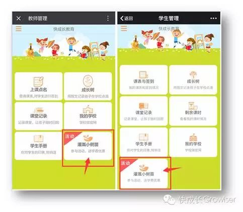
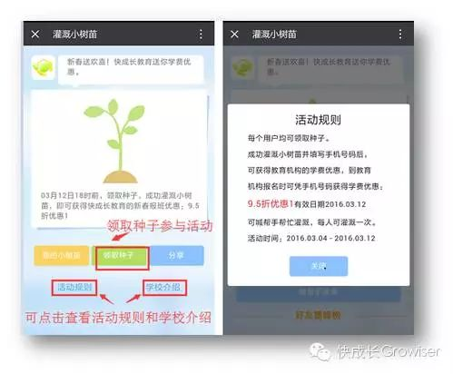
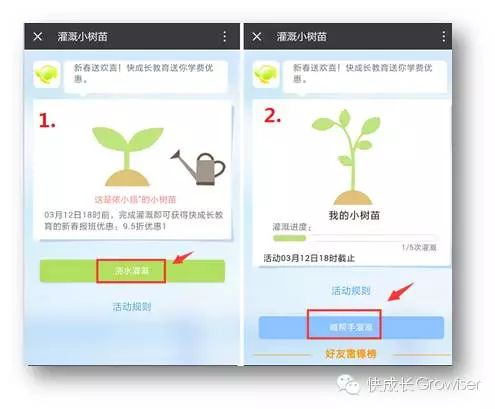
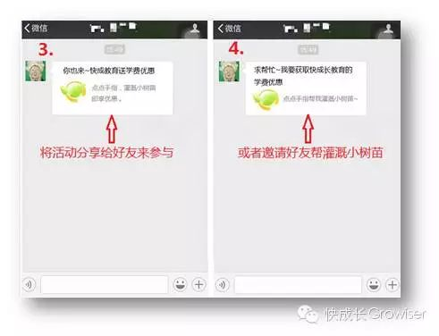
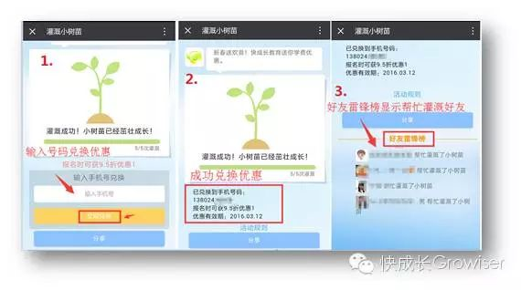
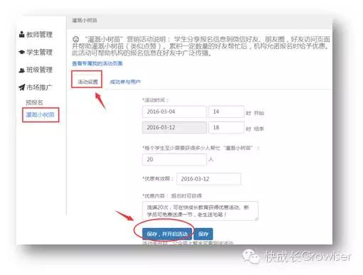
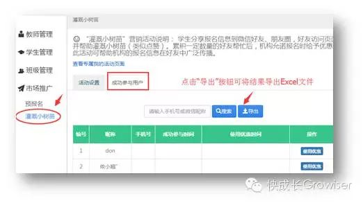

春回大地，草长莺飞，植树节就要到啦！快成长教育为您推出最新招生活动——灌溉小树苗。
“灌溉小树苗”是什么样的活动
“灌溉小树苗”是我们为机构精心打造的招生活动，以植树节为主题，机构在微信平台上发布本活动，用户参与活动（可分享到微信好友、朋友圈中请好友帮忙）成功灌溉小树苗后，即可获得机构的报班优惠。（具体活动规则由机构根据自身情况来制定）
为什么选择“灌溉小树苗”微信招生
有趣味、易操作、传播广、成本低
如今依靠发传单、贴广告等传统方式已经不能满足机构的招生需求了，不仅投入不少成本，而且耗费时间和精力，然而会看的人又能有多少？感兴趣的人又有多少？采取行动的人就更少了！甚至很多人不接您的传单，接了的又会扔掉，不扔的也基本用来垫屁股了……
与传统的招生方式相比，在微信平台发布“灌溉小树苗”招生活动就有明显的优势了。
1、形式有趣，吸引力强
在植树节来临之际，推出以“植树”为主题的招生活动，学生、家长就如同参与一项有趣的游戏，只需成功“灌溉小树苗”即可兑换机构提供的奖品或者学费优惠。这比常见的转发集赞活动更生动有趣，也比死板的传单更具有吸引力，更容易充分调动学生和家长们参与的积极性。
2、快速传播，广泛覆盖
如今微信已经覆盖了90%以上的智能手机，并成为人们生活中不可或缺的日常使用工具，微信的高频使用对于家长或学生们来说也不例外。
参与活动的学生或家长将活动信息转发出去并请好友帮忙灌溉之后，参与者可以在活动页面看到帮忙灌溉的好友名单，朋友之间更容易产生互动，活动信息会更容易被学生及家长的朋友所接收，从而提高曝光率！
值得一提的是，由于熟悉的朋友之间的可信度较好，通过这个活动更容易形成同一小区、同一学校的学生家长组团参与、以老带新的效果。这对于学习氛围、学习持续性、以及机构的品牌树立与传播具有良好的促进作用！
3、操作简单，一键搞定
机构只需在后台管理系统输入活动规则（如活动起止日期、优惠政策等），到了活动开始日期，您的“灌溉小树苗活动”就可以在微信端闪亮登场！再没有比这更方便快捷的了！
3、操作简单，一键搞定
通过“灌溉小树苗活动”进行招生，机构只需结合自身情况来设置活动奖品或者学费优惠，成功参与活动并且来到机构报名的学生才可兑换奖品或学费优惠。同时活动参与者的信息都会自动在后台记录在案，方便管理，不仅能够有效控制成本，还能节省时间精力。这比花费高昂的价钱印刷华而不实宣传单和购置赠品、耗费大量时间精力在大街上毫无针对性的派发更精准，更有效。
用户如何“灌溉小树苗”
1、活动开始之后，微信端的教师首页和学生首页将显示活动入口。（点击图片可放大查看）
用户点击“灌溉小树苗”菜单进入活动首页之后，点击“领取种子参与活动，可查看活动规则和学校介绍。
2、用户领取种子开始灌溉小树苗，可点击“喊帮手灌溉”按钮将活动发送给朋友或分享到朋友圈中，请好友帮忙灌溉以及参与活动。活动页面的“好友雷锋榜”会显示帮忙灌溉小树苗的好友，具有很高的互动性，有助于机构活动信息的传播和曝光！
 3、用户成功灌溉小树苗并填写手机号码后，即可获得机构的奖品或学费优惠，学生家长到机构报名时可凭手机号获取优惠。
机构如何设置“灌溉小树苗”活动”
1、首先机构老师或管理员登录电脑管理后台，点击进入“市场推广-->灌溉小树苗”菜单，点击“活动设置”，输入活动时间、优惠内容等具体规则，设置完毕之后点击“保存并开启活动”按钮即可，活动开始之后，微信端教师首页和学生首页将自动显示活动入口。
到达活动结束时间后，点击“保存并关闭活动”按钮，则微信端教师首页和学生首页将不再显示活动入口。如不点击“保存并关闭活动”按钮，则微信端仍然显示活动入口，但点击进入活动页面之后会提示活动已过期。
若活动进行过程中需要对活动规则进行修改，可按照相同的步骤进行操作，最后点击“保存”按钮即可。（点击图片可放大查看）
2、机构可在后台查看参与活动的用户信息，在确认参与活动的家长已成功使用活动优惠之后，点击对应的“使用优惠”按钮，即可记录使用优惠时间，避免重复兑奖，方便活动管理。
“灌溉小树苗”活动，不仅能够使机构的招生工作达到立竿见影的效果，并且对机构的品牌宣传更是意义重大，可谓一举两得，何乐而不为呢？赶紧使用起来吧！